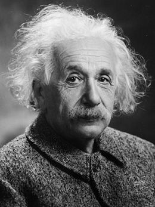

Stephen Hawking

(3 Formulas de viaje en el tiempo)
1- Los agujeros de gusano:
«Las películas de ciencia ficción muestran una vasta máquina hambrienta de energía que crea un túnel a través del tiempo. Un viajero del tiempo, un valiente, preparado para quién sabe qué, entre en el túnel y emerge quién sabe dónde (...) La realidad puede ser muy diferente a esto, pero la idea en sí no es tan loca», admite Hawking en su artículo. Para los físicos, los túneles en el tiempo pueden ser los agujeros de gusano. «Están a nuestro alrededor, en las grietas del espacio y del tiempo, pero son demasiado pequeños para poderlos ver», explica el científico. «En la escala más pequeña, incluso más pequeña que las moléculas y los átomos, existe la espuma cuantica. Aquí es donde existen los agujeros de gusano, pequeños túneles o atajos a través del espacio y el tiempo se forman y desaparecen constantemente».
Por desgracia, estos túneles son demasiado pequeños para que un ser humano pueda mirar por la cerradura. Miden sólo mil millones de billones de una billonésima de centímetro, pero quizás sea posible coger uno de ellos y hacerlo lo suficientemente grande para el ser humano o incluso para una nave espacial. De esta forma, podríamos viajar a otros planetas situados a años luz de distancia o «quizás los dinosaurios de la Tierra podrían ver aterrizar una nave».
Claro que el agujero de gusano tiene un pequeño problema, lo que Hawking llama la «Paradoja del científico loco». ¿Qué pasaría si un científico usa el agujero para disparar contra su yo del pasado? Ahora está muerto, pero ¿quién disparó? Es una paradoja, no tiene sentido. El tipo de situación que provoca pesadillas a los físicos. Este tipo de máquina del tiempo violaría una regla fundamental que gobierna el universo entero: las causas suceden antes de los efectos, y nunca al revés. El viaje al pasado sería imposible, pero, ¿y al futuro?
«Nos parece que el tiempo fluye como un río, a diferentes velocidades en diferentes lugares, y esa es la clave para viajar al futuro», explica Hawking. Esta idea fue propuesta por Albert Einstein hace cien años, al darse cuenta de que debería haber lugares donde el tiempo corre más lento y otros donde se acelera. «Tenía razón y la prueba está sobre nuestras cabezas», en el espacio, dice Hawking. El tiempo va más rápido en el espacio. Dentro de cada nave espacial hay un reloj muy preciso, pero a pesar de ello, todos ganan alrededor de un tercio de billón de segundo cada día. El problema no está en los relojes. Lo que ocurre es que la masa de la Tierra arrastra al tiempo y lo hace más lento.
En el centro de la Vía Láctea, a 26.000 años luz de nosotros, está el objeto más pesado de la galaxia: un agujero negro super masivo que disminuye la velocidad del tiempo más que cualquier otra cosa en la galaxia. «Es como una máquina del tiempo natural», dice Hawking. Si una nave espacial entrara en la órbita en el agujero, tardaría 16 minutos en completar una órbita para la agencia espacial que controlara la misión desde Tierra. Para los astronautas, sólo habrían pasado 8 minutos. Si pasaran orbitando cinco años, en realidad habrían transcurrido diez. Cuando llegaran a la Tierra, todos los demás habrían envejecido cinco años más que ellos. ¿El problema? Acercarse a un agujero negro es excesivamente peligroso.
3) Viajar a casi la velocidad de la luz
A la tercera va la vencida. Para Hawking, la solución puede pasar por viajar muy muy rápido, más aún que la velocidad requerida para evitar ser arrastrados por un agujero negro. Según Hawking, viajar a casi la misma velocidad de la luz, 186.000 millas por segundo, nos transportaría al futuro. Para explicarlo, el científico imagina un tren superveloz que diera vueltas a la Tierra 7 veces por segundo, lo que no alcanza la velocidad de la luz, algo que las leyes de la física prohíben. Entonces el tiempo empieza a transcurrir lentamente a bordo, como si estuviéramos cerca de un agujero negro, pero en mayor medida, como en cámara lenta. En una semana, el tren viajaría cien años en el futuro. Por supuesto, construir un tren que alcance esas velocidades es imposible, pero hemos construido algo muy parecido:El acelerador de particulas (LHC) del Centro Europeo de investigaciones Nuecleares (CERN) en Génova, Suiza. Lo sabemos por unas partículas, pi-menson, que generalmente se desintegran ipso facto pero que, cuando son aceleradas a casi la velocidad de la luz, duran 30 veces más.
Hawking concluyen que si queremos viajar al futuro, simplemente tenemos que ir muy rápido, algo que sólo es posible en el espacio. Para ello, haría falta una nave 2.000 veces más rápida que el Apollo 10, de enorme tamaño y que pudiera cargar una gran cantidad de combustible, lo suficiente para acelerarla a casi la velocidad de la luz. «Cuatro años después de haber despegado, la nave comenzaría a viajar en el tiempo. Por cada hora en la nave, dos pasarían en la Tierra», explica. Después de otros dos años de velocidad máxima, la nave llegaría a su tope, el 99% de la velocidad de la luz. Entonces, sólo un día a bordo representaría un año en la Tierra. Nuestra nave volaría al futuro.
Albert Einstein
El gran científico del siglo 20, Albert Einstein, desarrolló una teoría denominada Relatividad Especial. Las ideas de la Relatividad Especial son muy difíciles de imaginar porque no son cosas que experimentamos en la vida diaria, pero los científicos las han confirmado. Esta teoría dice que el espacio y el tiempo son realmente aspectos de la misma cosa: del tiempo espacial. Hay un límite de velocidad de 300.000 kilómetros por segundo para cualquier cosa que viaje a través del tiempo espacial, y la luz siempre viaja al límite de velocidad.
La Relatividad Especial también dice que ocurre algo interesante al movernos a través del tiempo espacial, especialmente cuando tu velocidad relativa a otros objetos es cercana a la velocidad de la luz. El tiempo pasa más lentamente para ti que para las personas que has dejado atrás. No observarás este efecto hasta que regreses a esas personas estacionarias.
Digamos que tenías 15 años de edad cuando abandonaste la Tierra en una nave espacial viajando a aproximadamente el 99.5% de la velocidad de la luz, que es mucho más rápido de lo que podemos lograr hoy en día, y celebraste sólo cinco cumpleaños durante tu viaje espacial. Cuando llegues a casa a los 20 años de edad, ¡encontrarás que todos tus compañeros de clase tienen 65 años de edad, están jubilados y disfrutando de sus nietos!
En cierto sentido, esto significa que has estado viajando en el tiempo. Habrás experimentado sólo cinco años de vida, mientras que tus compañeros de clase habrán experimentado 50 años enteros. Esta es una manera de viajar al futuro a una velocidad mayor que 1 hora por hora.

{kind=link}
{kind=link}